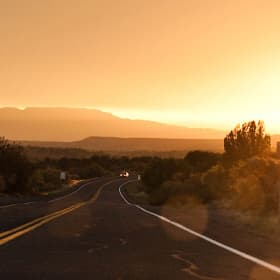

Главная страница Фото и Видео
Добро пожаловать в великодушную Седону
Фото и видео
Не можете решиться на путешествие из-за курса? Фотографии помогут вам забыть о политике и экономике.
-
 -

-

-

Все еще сомневаетесь?
Смотрите видеопрезентацию и скорее за билетами, пока они не подорожали в очередной раз!